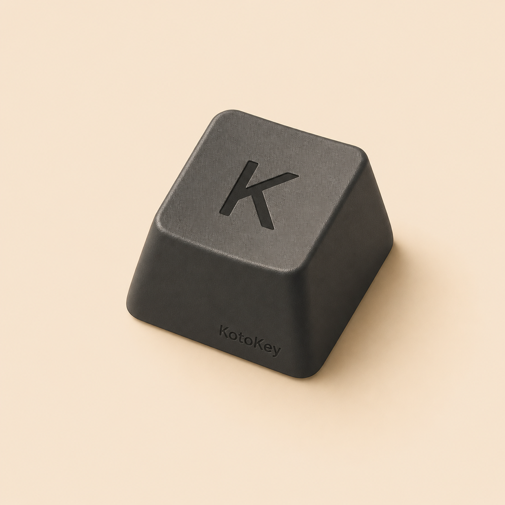

KotoKey
A keyboard app made for comfortable everyday typing. 毎日の入力に、心地よい打鍵感を。
English Japanese Privacy 日本語 English プライバシーApps made to make everyday typing and small tasks feel a little more comfortable. 日々の入力や小さな作業を、少し心地よくするためのアプリを作っています。

A keyboard app made for comfortable everyday typing. 毎日の入力に、心地よい打鍵感を。
English Japanese Privacy 日本語 English プライバシー